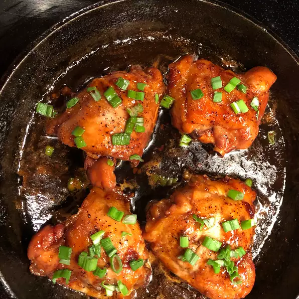

Honey Garlic Chicken Thighs

Description
This yummy meal is a family favorite. Also great for when you're expecting company. Note: use skin-on or skinless thighs. Substitute cilantro with parsley, if desired. Flavors: garlicy, sweet, fresh.Serves 8.
Ingredients
- 8 (5 ounce) boneless chicken thighs
- salt and ground pepper to taste
- 2 tablespoons olive oil, or as needed
- 1/2 a medium onion, finely chopped
- 7 cloves garlic, chopped, or to taste
- 1 cup honey
- 1/2 cup soy sauce
- 1 pinch onion powder, or to taste
- 1 pinch garlic powder, or to taste
- 1/4 cup chopped fresh cilantro
Steps
- Season the chicken with salt and pepper on both sides.
- Cover the bottom of a cast iron skillet with olive oil and bring to medium-high heat. Add chicken and brown on one side, 3 to 5 minutes. Flip chicken and add onion and garlic. Continue cooking until chicken is mostly (but not fully) cooked and onion and garlic are soft, about 5 to 7 minutes. Remove chicken and put aside on a plate.
- Add honey, soy sauce, onion powder, and garlic powder to the skillet. Stir and scrape the bottom of the pan with a wooden spoon to get the garlic and onion to mix with the liquid.
- Put chicken back into pan, cover, and reduce heat to medium. Cook until no longer pink in the center and juices run clear, about 10 minutes, turning once halfway through. An instant-read thermometer inserted into the center of a thight should read at least 165 degrees F (74 degrees C).
- Place on tray to serve and drizzle liquid from the pan on top. Sprinkle with chopped cilantro before serving.